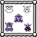
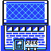

A Pokémon battle, or Pokémon fight is a competition between Pokémon.
A Pokémontrainer can battle against their rival or against wild Pokémon.
The Pokémon use moves when fighting. Not all Pokémon can learn the same moves! Moves damage the other Pokémon's HP (Hit Points) or change their status (Pokémon can be poisoned, paralyzed and more).
Each Pokémon has one or two types and each move has one type. The possible types are: Normal, Fire, Fighting, Water, Flying, Grass, Poison, Electric, Ground, Psychic, Rock, Ice, Bug, Dragon, Ghost and Dark. All types have their own strengths and weaknesses.
Let's start simple. Charmander is a Fire-type Pokémon, Bulbasaur is a Grass-type Pokémon and Squirtle is a Water-type Pokémon.
Use this to your advantage!
This is where everything happens.

Professor Oak is hanging around the north of the town with his Pokédex, talk to him to take a look at all the different Pokémon you've caught and seen.

Go to the Gym to battle your rival.
Your Pokémon like to play here, talk to them and see how they're doing.

There's even a patch of tall grass where you can find wild Pokémon.
Don't forget to visit the Pokécenter!
When your Pokémon's HP is low, it's time to go to the Pokécenter. The nice nurse behind the counter will heal your Pokémon for free! There's also a pc in the corner that trainers can use to look at their owned Pokémon.